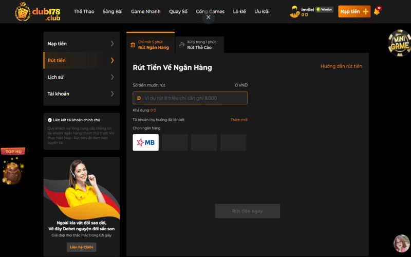

Cách rút tiền Club178 mà bạn cần phải biết
Trong quá trình tham gia cá cược thể thao và đánh bài trực tuyến tại nhà cái uy tín Club178 , việc nạp rút tiền Club178 là những thao tác tối thiểu mà người chơi cần biết. Dưới đây là hướng dẫn chi tiết về các phương thức rút nạp tiền được hỗ trợ tại Club178 .
Rút tiền Club178 bằng cách nào?
Rút tiền từ nhà cái Club178 thường được thực hiện thông qua các phương thức thanh toán chuyển khoản và đổi
thẻ cào điện thoại. Quá trình rút tiền có thể khác nhau tùy thuộc vào quy định và chính sách của Club178 .
Vì vậy bạn nên tham khảo trang web hoặc liên hệ với dịch vụ khách hàng của Club178 để biết được các phương
thức cụ thể và quy trình rút tiền.
Hiện tại, nhà cái Club178 cung cấp các phương thức rút tiền phổ biến như:
Rút tiền Club178 về ngân hàng
Bước 1: Truy cập vào trang web của Club178 và đăng nhập bằng thông tin tài khoản của bạn => chọn NẠP TIỀN ở góc phải phía trên. Chuyển sang tab RÚT TIỀN => Chọn Rút qua ngân hàng.
Bước 2: Bước này yêu cầu anh em phải điền các thông tin sau để có thể rút tiền về.
- Chọn ngân hàng: Anh em hãy chọn ngân hàng mà mình đã liên kết trước đó. Nếu chưa liên kết tài khoản ngân hàng, anh em chuyển qua tab TÀI KHOẢN để thêm vào nhé.
- Để rút tiền vào ngân hàng, bạn sẽ được yêu cầu cung cấp thông tin về tài khoản ngân hàng của bạn. Điều này có thể bao gồm số tài khoản, tên ngân hàng, mã Swift/BIC và mã chi nhánh. Đảm bảo nhập thông tin chính xác để tránh sai sót trong quá trình chuyển khoản.
- Nhập số tiền muốn rút: Anh em điền số tiền tương ứng 1Đ=1000VNĐ theo quy định của nhà cái nhé, ví dụ muốn rút 1.000.000VNĐ thì anh em điền 1.000. Anh em cũng lưu ý số dư trong tài khoản của mình có đủ để rút tiền Club178 về hay không nhé.
Bước 3: Kiểm tra lại các thông tin về số tài khoản ngân hàng, tên chủ tài khoản, số tiền rút về và bấm
RÚT TIỀN.
Bước 4: Anh em chờ ít phút để hệ thống có thể kiểm tra và chuyển tiền về tài khoản nhé.
LƯU Ý:
- Lưu ý rằng thời gian chuyển khoản và các khoản phí có thể khác nhau tùy thuộc vào Club178 và ngân hàng của bạn. Hãy kiểm tra chính sách, quy định và thông báo của Club178 để biết thông tin chi tiết về rút tiền và các khoản phí liên quan.
- Nhà cái Club178 không chịu trách nhiệm cho bất cứ thông tin điền sai nào dẫn đến việc mất tiền hoặc tài khoản bị hack.
Rút tiền Club178 về thẻ cào
Thông qua một số nhà cái hoặc dịch vụ cá cược trực tuyến, bạn có thể rút tiền từ tài khoản cá cược và
đổi thành thẻ cào điện thoại. Quy trình này có thể khác nhau tùy thuộc vào nhà cái hoặc dịch vụ mà bạn
đang sử dụng.
Dưới đây là một hướng dẫn tổng quát để rút tiền cá cược và đổi thành thẻ cào điện thoại:
Bước 1: Đăng nhập vào tài khoản Club178 => chọn NẠP TIỀN ở góc phải phía
trên. Chuyển sang tab RÚT TIỀN =>
.
Bước 2: Anh em điền thông tin được yêu cầu như sau:
- Chọn mệnh giá: Chọn mệnh giá tương đương với số tiền muốn rút. Lưu ý là những mệnh giá có thể chọn là 10K, 20K, 30K, 50K, 100K, 200K, 300K, 500K và 1.000K
- Số lượng thẻ muốn rút: Chọn số lượng thẻ muốn rút tiền Club178 tương ứng với số tiền
Ví dụ: Muốn rút 2.000k (tức hai triệu đồng) thì chọn mệnh giá thẻ là 1.000K và số lượng thẻ là 2
thẻ.
Bấm Rút tiền ngayvà đợi trong giây lát để nhận mã thẻ cào, sau đó đổi thẻ
cào thành tiền chuyển khoản
qua các trang web chiết khấu hoặc bán lại cho đại lý bán thẻ.
LƯU Ý:
- Hãy chọn đúng mệnh giá và số lượng thẻ, nếu chọn sai Club178 sẽ không chịu bất kỳ trách nhiệm nào liên quan!
- Lưu ý rằng quy trình rút tiền thành thẻ cào điện thoại có thể thay đổi tùy thuộc vào nhà cái hoặc dịch vụ. Hãy liên hệ với nhà cái cá cược hoặc dịch vụ khách hàng của họ để biết thông tin chi tiết và hướng dẫn cụ thể.
Quan trọng nhất, trước khi rút tiền từ nhà cái Club178 , hãy đảm bảo bạn đã đáp ứng các yêu cầu cần thiết như đạt được mức rút tối thiểu, xác minh danh tính và hoàn thành các quy trình xác minh khác mà Club178 yêu cầu.
Các câu hỏi thường gặp khi nạp rút tiền tại Club178
Có tốn phí rút tiền Club178 không?
Các khoản phí rút tiền từ tài khoản Club178 có thể khác nhau tùy thuộc vào nhà cái Club178 và phương thức
rút tiền mà bạn sử dụng. Một số nhà cái có thể áp dụng một khoản phí cố định hoặc tỷ lệ phần trăm trên
số tiền rút, trong khi những nhà cái khác có thể cung cấp một số lượng rút tiền miễn phí trong một
khoảng thời gian nhất định.
Tại Club178 , khi bạn rút tiền về tài khoản thì bạn sẽ không bị tính bất kỳ loại phí nào, kể cả phí chuyển
khoản hay phí rút tiền.
Tại sao đổi thẻ cào điện thoại lại mất phí?
Club178 hỗ trợ cổng thẻ cào để anh em tiện giao dịch khi cần thiết, tuy nhiên nạp rút tiền Club178 bằng thẻ cào phải thông qua bên trung gian không phải Club178 , phí chiết khấu theo nhà mạng như sau: Viettel 16%, Vinaphone là 17%, Mobifone: 19%. Club178 hoàn toàn không nhận bất kỳ lợi nhuận nào đối với hình thức thanh toán này.
Rút tiền mặt có được không?
Club178 hiện chỉ hỗ trợ chuyển khoản về tài khoản ngân hàng hoặc đổi thưởng qua thẻ cào. Hiện Club178 đang hỗ trợ giao dịch rút tiền Club178 qua các một số ngân hàng phổ biến tại Việt Nam như: Vietcombank, Đông Á, ACB (Á Châu), BIDV, Techcombank, Vietinbank, Sacombank, MBbank, SHB, Agribank, Eximbank, HDbank, PVcombank, Vietcapital, TPbank. Quý Khách có thể Nạp – Rút về bất kỳ ngân hàng nào trong những ngân hàng trên.
Nếu không có tài khoản ngân hàng thì có thể chơi được không?
Club178 hiện chỉ hỗ trợ chuyển khoản về tài khoản ngân hàng hoặc đổi thưởng qua thẻ cào. Hiện Club178 đang hỗ trợ giao dịch rút tiền Club178 qua các một số ngân hàng phổ biến tại Việt Nam như: Vietcombank, Đông Á, ACB (Á Châu), BIDV, Techcombank, Vietinbank, Sacombank, MBbank, SHB, Agribank, Eximbank, HDbank, PVcombank, Vietcapital, TPbank. Quý Khách có thể Nạp – Rút về bất kỳ ngân hàng nào trong những ngân hàng trên.
Nếu không có tài khoản ngân hàng thì có thể chơi được không?
Trong trường hợp không có tài khoản ngân hàng, anh em có thể Nạp tiền bằng cách nạp qua thẻ cào hoặc nạp qua momo tại đại lý. Tuy nhiên để có thể chơi lâu dài, chúng tôi khuyến khích anh em mở cho mình một tài khoản ngân hàng trong danh sách các ngân hàng hệ thống đang hỗ trợ để tiện cho các giao dịch nạp rút tiền Club178 .
Làm thế nào để biết các khoản phí cụ thể khi rút tiền từ Club178
Để biết được các khoản phí cụ thể cho việc rút tiền từ tài khoản Club178 , tốt nhất là tham khảo các nguồn thông tin chính thức từ nhà cái Club178 mà bạn đang sử dụng. Dưới đây là một số cách bạn có thể tìm hiểu về các khoản phí rút tiền Club178 :
- Trang web của nhà cái Club178 : Kiểm tra phần Trợ giúp, Điều khoản và Điều kiện hoặc Chính sách thanh toán trên trang web của nhà cái Club178 . Thông tin về các khoản phí thường được cung cấp trong các tài liệu này.
- Liên hệ với nhân viên chăm sóc khách hàng: Gửi email hoặc liên hệ trực tiếp với dịch vụ khách hàng của nhà cái Club178 để yêu cầu thông tin về các khoản phí rút tiền Club178 . Nhân viên chăm sóc khách hàng sẽ cung cấp cho bạn thông tin chính xác và chi tiết về các khoản phí áp dụng.
- Trao đổi với người chơi khác: Có thể tham gia vào các diễn đàn hoặc cộng đồng trực tuyến liên quan đến nhà cái Club178 để hỏi về các khoản phí rút tiền. Người dùng khác có thể chia sẻ kinh nghiệm của họ và cung cấp thông tin về các khoản phí mà họ đã gặp phải.
- Lưu ý rằng các khoản phí rút tiền từ tài khoản Club178 có thể thay đổi theo thời gian và tùy thuộc vào nhà cái cũng như các bên trung gian. Vì vậy, quan trọng là bạn xem xét các nguồn thông tin chính thức từ nhà cái Club178 để có được thông tin cụ thể và đáng tin cậy.
Tại sao tôi không thể rút tiền Club178 được từ tài khoản của mình
Có một số nguyên nhân có thể khiến bạn không thể rút tiền từ tài khoản. Dưới đây là một số nguyên nhân phổ biến:
- Số dư không đủ: Nếu số dư trong tài khoản của bạn không đủ để thực hiện giao dịch rút tiền, Club178 sẽ từ chối giao dịch. Hãy kiểm tra số dư tài khoản của bạn để đảm bảo rằng bạn có đủ tiền để rút theo quy định.
- Khóa tài khoản: Trong một số trường hợp, ngân hàng có thể tạm khóa tài khoản của bạn vì các lý do bảo mật hoặc nghi ngờ gian lận. Điều này có thể khiến bạn không thể rút tiền cho đến khi vấn đề được giải quyết. Trong trường hợp này, hãy liên hệ với ngân hàng hoặc tổ chức tài chính để biết thêm thông tin và yêu cầu hỗ trợ.
- Vấn đề kỹ thuật: Có thể xảy ra các vấn đề kỹ thuật từ phía ngân hàng hoặc nhà cái khi rút tiền Club178 , hệ thống thanh toán hoặc thiết bị rút tiền. Nếu bạn gặp sự cố kỹ thuật, hãy liên hệ với ngân hàng và nhân viên chăm sóc khách hàng để báo cáo vấn đề và yêu cầu hỗ trợ.
- Sai thông tin: Nếu bạn nhập sai thông tin tài khoản hoặc thông tin xác thực trong quá trình rút tiền, giao dịch có thể không thành công. Hãy kiểm tra kỹ thông tin bạn cung cấp để đảm bảo rằng nó chính xác.
- Hạn chế hoặc chính sách của ngân hàng: Một số ngân hàng có thể áp đặt các hạn chế hoặc chính sách đặc biệt đối với việc rút tiền, chẳng hạn như giới hạn số lần rút hàng ngày, hạn chế số tiền rút tối đa hoặc yêu cầu các quy trình bổ sung để xác minh danh tính. Hãy kiểm tra với ngân hàng của bạn để biết về các hạn chế và chính sách áp dụng.
Nếu bạn không thể rút tiền từ tài khoản và không hiểu nguyên nhân, quan trọng là liên hệ với ngân hàng của bạn và cả nhân viên để được hỗ trợ và giải quyết vấn đề rút tiền Club178 nhanh nhất. Họ sẽ có thông tin chính xác và cung cấp giải pháp phù hợp cho trường hợp riêng biệt.
Phải làm sao khi giao dịch bị lỗi?
Gặp trường hợp giao dịch rút tiền Club178 hay nạp tiền bị lỗi, đừng vội hoang mang mà hãy liên lạc
ngay với tổng đài viên để nhận hỗ trợ ngay tức khắc. Anh em cũng đừng quên chụp màn hình giao dịch
bị lỗi để cung cấp các bằng chứng xác thực cho nhân viên hỗ trợ nhé!
Còn trong trường hợp giao dịch đã thành công nhưng chưa nhận được tiền về tài khoản, hãy kiên nhẫn
chờ trong giây lát, đây có thể là lỗi đến từ ngân hàng và Club178 không thể hỗ trợ trong trường hợp
này.
Lời kết
Club178 là nhà cái uy tín Châu Âu mong muốn mang đến cho anh em một sân chơi bổ ích, kiếm tiền dễ dàng cho cược thủ. Các bước nạp và rút tiền Club178 vô cùng dễ dàng và nhanh chóng để anh em yên tâm trải nghiệm. Chúc anh em kiếm được thật nhiều tiền thông qua những trò chơi tại Club178 !